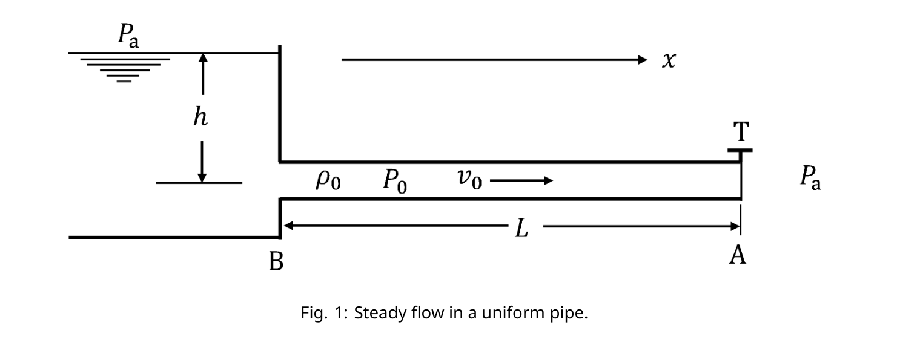
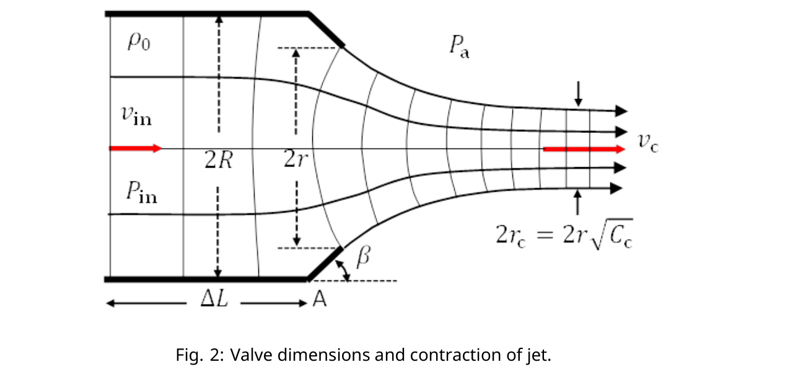

Water-Hammer Effect
Introduction
This problem studies variations of fluid pressure caused by pressure waves in a flow pipe. Proposed tasks mainly deal with the water-hammer effect arising from both fast and slow closings of a flow-control valve in the pipe.
We consider only nonviscous liquids and liquid flows which are essentially one-dimensional. All pipes including their valves are assumed to be rigid, but liquids are not always considered to be incompressible. If a liquid element of volume at equilibrium under pressure is subjected to a change of pressure , the change of its volume is assumed to be proportional to so that
\Delta P = -B\,\frac{\Delta V}{V_0} \tag{1}
The constant of proportionality represents the bulk modulus of the liquid. For water, take as its equilibrium density and .
Part A. Excess Pressure and Propagation of Pressure Wave (2.2 points)
In a uniform cylindrical pipe of length , water is flowing steadily along the direction with horizontal velocity , density , and pressure . As shown in Fig. 1, the pipe is connected to a reservoir at a depth and opens into the atmosphere at pressure .
Suppose the flow-control valve T at the end of the pipe is then shut instantly so that the oncoming liquid element next to the valve suffers both a pressure change and a velocity change with . This causes a longitudinal wave of excess pressure to travel upstream in the direction with a speed of propagation .

Fig. 1: Steady flow in a uniform pipe.A.1 The excess pressure is related to the velocity change by . The speed of propagation is given by . Find , , and . (1.6pt)
A.2 Calculate values of and for the case of water flow with and . (0.6pt)
Part B. A Model for the Flow-control Valve (1.0 points)
Fig. 2 shows a model for control valve T and the liquid flow through it. The valve is taken to be a short section of length and inner radius near the end A of the pipe. Its cone-shaped outlet has an orifice of radius and opens into the atmosphere at pressure . Effects of gravity on the efflux are to be neglected.
The liquid is to be regarded as incompressible and the flow as steady with liquid element at the valve inlet having velocity , pressure , and density . In Fig. 2, stream lines and normal lines are drawn only as an aid for visualizing the flow pattern.

Fig. 2: Valve dimensions and contraction of jet.It is known that, after leaving the valve into the atmosphere, the cross section of the flow will contract until it reaches a minimum where the stream lines are again parallel. At this point of minimum, the flow velocity is and the cross section of the flow has a radius . Here , called the contraction coefficient, depends on the ratio and the cone angle as shown in Table 1.
| 0.00 | 0.746 | 0.611 |
| 0.20 | 0.747 | 0.616 |
| 0.30 | 0.748 | 0.622 |
| 0.40 | 0.749 | 0.631 |
| 1.00 | 1.000 | 1.000 |
Table 1. Contraction Coefficients for Orifices
B.1 Find the excess pressure at the valve inlet where the stream lines are parallel. Give your answer in terms of , , , , and . (1.0pt)
For all tasks in Part C and Part D, we consider the reservoir-pipe system in Fig. 1 and make the following assumptions:
- Speed of propagation and density of liquid are given constants independent of flow velocity. The ambient atmospheric pressure and the acceleration of gravity are constant.
- Initially, the valve is fully open and the flow in the pipe is steady with fluid pressure and velocity .
- As in Fig. 1 and Fig. 2, the pipe has length and radius . The valve T is a circular opening of variable radius with angle and its length is negligible so that the valve inlet is effectively at the end A of the pipe. Effects of gravity on the efflux are negligible.
- Liquid in the reservoir is quasi-static so that its pressure near the pipe entrance B remains constant and we assume that the variation of fluid pressure across the pipe is negligible so that the flow is one-dimensional throughout the pipe.
- The model outlined in Part B may be used to determine the excess pressure at the valve inlet.
Part C. Water-Hammer Effect due to Fast Closure of Flow Control Valve (1.8 points)
Refer to the reservoir-pipe system in Fig. 1. When liquid flow in the pipe is obstructed by complete or partial closure of the valve, a pressure wave starts traveling upstream. It gets reflected at the reservoir end of the pipe and travels back to the valve and gets reflected there. Then another pressure wave is generated and the process just described is repeated. This causes a sequence of sudden pressure surges and dips for liquid element next to the valve and is referred to as water-hammering.
C.1 Refer to Fig. 1 and Fig. 2. Find the pressure and velocity of the steady flow in the pipe when valve T is fully open (). Give answers in terms of , , , and . (0.6pt)
C.2 Consider the same steady flow as in task C.1 with pressure and flow velocity . Now, at , the valve is closed () instantly. A pressure wave heads toward the reservoir with speed of propagation . Take note . Let . What are the fluid pressure and flow velocity in the pipe when is getting very close to each of the instants and ? (1.2pt)
Part D. Water-Hammer Effect due to Slow Closure of Flow Control Valve (5.0 points)
Consider again the same steady flow as in task C.1 with pressure and flow velocity . Now we close the valve slowly and adopt a finite-step approach to simulate the closing process.
Starting at time , the instant reduction of the radius of the valve (see Fig. 2) is carried out sequentially at a time interval . Immediately after each instant reduction of radius, the flow in the valve region is approximated to be steady as in Part B. The pressure and velocity at the valve are then different from those of the rest of the flow in the pipe.
For each closing step , its duration and the radius of the valve opening are specified in Table 2 along with the symbols used to represent the corresponding fluid pressure and flow velocity at the valve.
| closing step | time interval of step | ratio | pressure at valve when | flow velocity at valve when |
|---|---|---|---|---|
| 1.00 | ||||
| 0.40 | ||||
| 0.30 | ||||
| 0.20 | ||||
| 0.00 |
Table 2. Valve closing steps
Take fluid density and speed of propagation as constants. Let . Define and . Make sure to enforce the approximation .
D.1 Obtain an equation which expresses in terms of , , and . It must be valid for all steps specified in Table 2. For , obtain also an equation which allows to be computed if both and are known. (3.0pt)
D.2 Apply the result of task D.1 to water flow with . Use the graph paper provided in the Answer Sheet to make all plots of versus . Be sure to draw lines and curves intersecting at points having coordinates which give the values of and for steps . On the plot, label each point of intersection with the value of to which it corresponds. From the graph, estimate values of and (both in units of MPa) for . (2.0pt)
Fonte: Testo (PDF) — p.1
Topic: Fluid Mechanics, Elasticity & Materials Metodi: Bernoulli’s Equation, Continuity Equation, Impulse-Momentum Theorem, Wave Equation Competenze: Mathematical Modeling, Physical Reasoning, Graph Linearization Objects: Tube
Effetto del martello d’acqua
Introduzione
Questo problema studia le variazioni della pressione del fluido causate dalle onde di pressione in un tubo di flusso. I compiti proposti riguardano principalmente l’effetto martello idrico derivante sia da chiusure rapide che lente di una valvola di controllo del flusso nel tubo.
Si considerano solo liquidi non viscosi e flussi liquidi che sono essenzialmente unidimensionali. Si presume che tutti i tubi, comprese le valvole, siano rigidi, ma non sempre i liquidi siano considerati incompressibili. Se un elemento liquido di volume in equilibrio sotto pressione è sottoposto a un cambiamento di pressione , si presume che il suo cambiamento di volume sia proporzionale a in modo tale che
\Delta P = -B\,\frac{\Delta V}{V_0} \tag{1}
La costante di proporzionalità rappresenta il modulo di massa del liquido. Per l’acqua, prendere come densità di equilibrio e .
Parte A. Pressione eccessiva e diffusione dell’onda di pressione (2,2 punti)
In un tubo cilindrico uniforme di lunghezza , l’acqua scorre costantemente lungo la direzione con velocità orizzontale , densità e pressione . Come mostrato nella figura. 1, il tubo è collegato a un serbatoio a una profondità e si apre nell’atmosfera a pressione .
Supponiamo che la valvola T di controllo del flusso alla fine del tubo venga chiusa istantaneamente in modo che l’elemento liquido di fronte accanto alla valvola subisca sia un cambiamento di pressione che un cambiamento di velocità con . Ciò provoca che un’onda longitudinale di pressione in eccesso si muova a monte nella direzione con una velocità di propagazione .
Fig. 1: flusso costante in un tubo uniforme.
A.1 La pressione in eccesso è correlata al cambiamento di velocità da . La velocità di propagazione è data da . Trova , e . (1.6pt)
A.2 Calcolare i valori di e per il caso del flusso d’acqua con e . (0.6pt)
Parte B. Modello della valvola di controllo del flusso (1,0 punti)
Fig. - Cosa? 2 mostra un modello della valvola di controllo T e del flusso di liquido attraverso di essa. La valvola è considerata una sezione breve di lunghezza e di raggio interno vicino alla fine A del tubo. La sua uscita a forma di cono ha un orificio di raggio e si apre nell’atmosfera a pressione . Gli effetti della gravità sull’efflusso devono essere trascurati.
Il liquido deve essere considerato incompressibile e il flusso deve essere considerato stabile con l’elemento liquido all’entrata della valvola, avendo velocità , pressione e densità . - In Fig. 2, le linee di flusso e le linee normali sono disegnate solo come aiuto per visualizzare il modello di flusso.
Fig. 2: Dimensioni della valvola e contrazione del getto.
È noto che, dopo aver lasciato la valvola nell’atmosfera, la sezione trasversale del flusso si contraverrà fino a raggiungere un minimo in cui le linee di flusso sono nuovamente parallele. A questo punto minimo, la velocità di flusso è e la sezione trasversale del flusso ha un raggio . Qui , denominato coefficiente di contrazione ****, dipende dal rapporto e dall’angolo conico come mostrato nella tabella 1.
| 0.00 | 0.746 | 0.611 |
| 0.20 | 0.747 | 0.616 |
| 0.30 | 0.748 | 0.622 |
| 0.40 | 0.749 | 0.631 |
| 1.00 | 1.000 | 1.000 |
Tabella 1. Coefficienti di contrazione per gli orifici
B.1 Trova la pressione in eccesso all’entrata della valvola dove le linee di flusso sono parallele. Rispondi con , , , e . (1.0pt)
Per tutti i compiti della parte C e della parte D, si considera il sistema di tubi di serbatoio nella figura. 1 e fare le seguenti ipotesi:
- La velocità di propagazione e la densità del liquido sono date costanti indipendenti dalla velocità di flusso. La pressione atmosferica ambientale e l’accelerazione della gravità sono costanti.
- Inizialmente, la valvola è completamente aperta e il flusso nel tubo è costante con pressione del fluido e velocità .
- Come in Fig. 1 e Fig. 2, il tubo ha lunghezza e raggio . La valvola T è un’apertura circolare di raggio variabile con angolo e la sua lunghezza è trascurabile in modo che l’entrata della valvola sia effettivamente all’estremità A del tubo. Gli effetti della gravità sull’efflusso sono trascurabili.
- Il liquido nel serbatoio è quasi-statico, in modo che la sua pressione vicino all’entrata del tubo B rimanga costante e presumiamo che la variazione della pressione del fluido attraverso il tubo sia trascurabile, in modo che il flusso sia unidimensionario in tutto il tubo.
- Il modello descritto nella parte B può essere utilizzato per determinare la pressione in eccesso all’ ingresso della valvola.
Parte C. Effetto martello-acqua dovuto alla chiusura rapida della valvola di controllo del flusso (1,8 punti)
Si riferisce al sistema di tubi di riserva in Figura. 1. Quando il flusso di liquido nel tubo viene ostacolato dalla chiusura completa o parziale della valvola, un’onda di pressione inizia a viaggiare a monte. Si riflette all’estremità del serbatoio della tubazione e si riporta alla valvola e si riflette lì. Poi viene generata un’altra onda di pressione e si ripete il processo appena descritto. Questo provoca una sequenza di improvvisi solti di pressione e di scarsezza per l’elemento liquido accanto alla valvola e viene indicato come ** martellamento idrico**.
C.1 Si riferisce alla figura. 1 e Fig. 2. Trova la pressione e la velocità del flusso costante nel tubo quando la valvola T è completamente aperta (). Risposte in termini di , , e . (0.6pt)
C.2 Considera lo stesso flusso costante come nella attività C.1 con pressione e velocità di flusso . Ora, a , la valvola viene chiusa () istantaneamente. Un’onda di pressione si dirige verso il serbatoio con velocità di propagazione . Si noti . Lasciate . Qual è la pressione del fluido e la velocità di flusso nel tubo quando si avvicina molto a ciascuno degli istanti e ? (1.2pt)
Parte D. Effetto martello-acqua dovuto alla lenta chiusura della valvola di controllo del flusso (5,0 punti)
Considerare di nuovo lo stesso flusso costante come nella attività C.1 con pressione e velocità di flusso . Ora chiudiamo lentamente la valvola e adottiamo un approccio a passaggi finiti per simulare il processo di chiusura.
A partire dal tempo , la riduzione istantanea del raggio della valvola (vedi figura 1. 2) viene effettuata sequenzialmente ad intervallo temporale . Subito dopo ogni riduzione istantanea del raggio, il flusso nella regione della valvola è stimato a essere costante come nella parte B. La pressione e la velocità della valvola sono quindi diverse da quelle del resto del flusso nel tubo.
Per ogni fase di chiusura , la sua durata e il raggio dell’apertura della valvola sono specificati nella tabella 2 insieme ai simboli utilizzati per rappresentare la corrispondente pressione del fluido e la velocità di flusso alla valvola.
| closing step | time interval of step | ratio | pressure at valve when | flow velocity at valve when |
|---|---|---|---|---|
| 1.00 | ||||
| 0.40 | ||||
| 0.30 | ||||
| 0.20 | ||||
| 0.00 |
Tabella 2. Passi di chiusura della valvola
Prendi come costanti la densità del fluido e la velocità di propagazione . Lasciate . Definire e . Assicurarsi di applicare l’approssimazione .
D.1 Ottieni un’equazione che esprime in termini di , e . Deve essere valida per tutte le fasi specificate nella tabella 2. Per , ottenere anche un’equazione che consente di calcolare se sono noti sia che . (3.0pt)
D.2 Applicare il risultato della attività D.1 al flusso d’acqua con . Utilizzare la carta grafica fornita nella scheda delle risposte per fare tutti i grafici di contro . Assicurarsi di disegnare linee e curve che si intersecano in punti con coordinate che danno i valori di e per i passi . Sul plotone, etichettare ogni punto di intersezione con il valore di al quale corrisponde. Dal grafico, i valori stimati di e (tutti in unità di MPa) per . (2.0pt)
Fonte: Testo (PDF) — p.1
Topic: Fluid Mechanics, Elasticity & Materials Metodi: Bernoulli’s Equation, Continuity Equation, Impulse-Momentum Theorem, Wave Equation Competenze: Mathematical Modeling, Physical Reasoning, Graph Linearization Objects: Tube